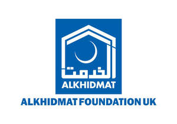

Trade Mark Journal No.2025/049 5 December 2025
UK00004268680 24 September 2025 (14,35,36,37,39,41,43,44,45)

- Class 14
- Wristbands [charity]; Charity bracelets; Bracelets [charity]; Wrist bands [charity].
- Class 35
- Arranging promotion of charitable fundraising events; Matching skilled volunteers with non-profit organisations; Promoting philanthropic services; Organising of volunteer programmes for others; Business consultancy services relating to the promotion of fund raising campaigns; Promoting humanitarian activities; Promotion of goods and services through sponsorship of international sports events; Promotion of goods and services through sponsorship of sports events; Organisation of trade fairs; Advertising services to promote public awareness in the field of social welfare.
- Class 36
- Charitable fundraising through the sale of charity stamps; Charitable fundraising; Fund raising for charity; Charitable fundraising services; Charitable fundraising services for underprivileged children; Charitable fund raising; Fund raising (Charitable -); Organisation of charitable collections; Charitable fund raising services; Fund raising for charitable purposes; Organising of charitable collections; Charitable fundraising by means of entertainment events; Charitable collections; Collections (Charitable -); Fundraising; Fund-raising; Fundraising and sponsorship; Providing monetary grants to charities; Fundraising and financial sponsorship; Investment of funds for charitable purposes; Provision of charitable fundraising services in relation to carbon offsetting; Providing information relating to charitable fundraising; Fundraising services; Fund sponsorship; Philanthropic services concerning monetary donations; Fund-raising services; Charitable fund raising in view of disaster precautions and prevention; Arranging charitable collections [for others]; Eleemosynary services in the field of monetary donations; Arranging fundraising; Benevolent fund services; Fund raising services via crowdfunding website; Memorial fund raising; Fund raising services; Fund raising; Charitable services, namely financial services; Providing funding for non-profit entities; Trusteeship of money; Organisation of financial collections; Arranging business fundraising activities; Raising of funds for financial purposes; Financial sponsorship of sports events; Venture capital funding services for non-profit entities; Organisation of collections; Collections (Organisation of -); Financial sponsorship of sporting activities.
- Class 37
- Charitable services, namely construction.
- Class 39
- Charitable services, namely distribution of clothing; Charitable services, namely distribution of blankets; Charitable services, namely providing transportation; Organisation of tours; Charitable services in the nature of providing transport for the elderly or disabled persons.
- Class 41
- Organisation of galas; Arranging and conducting of entertainment events for charitable fundraising purposes; Organisation of concerts; Arranging and conducting of sports events for charitable purposes; Arranging and conducting of live entertainment events for charitable purposes; Arranging and conducting of entertainment events for charitable purposes; Arranging and conducting of educational events for charitable purposes; Organising of galas; Organisation of educational events; Organisation of sporting events; Organisation of competitions [education or entertainment]; Organisation of outings for entertainment; Organisation of cycling events; Organisation of festivals; Organisation of entertainment events; Organisation of golf competitions.
- Class 43
- Providing food to needy persons [charitable services]; Charitable services, namely, providing food to needy persons; Charitable services, namely providing food and drink catering; Charitable services, namely providing temporary accommodation.
- Class 44
- Charitable services, namely, providing medical services to needy persons.
- Class 45
- Providing clothing to needy persons [charitable services]; Providing shoes to needy persons [charitable services]; Intellectual property consultancy services for non-profit organisations.
ALKHIDMAT FOUNDATION UK